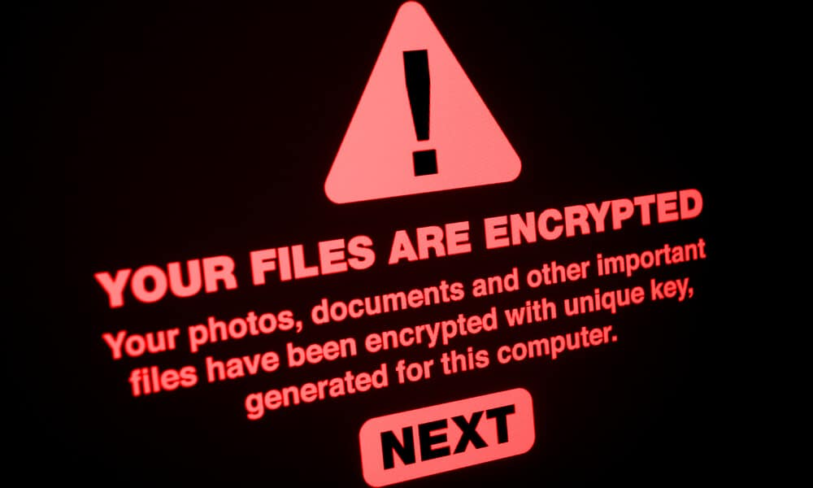

Protección contra Ransomware
¿Qué es un Ransomware?
Un ransomware es un tipo de malware que cifra los archivos del usuario y exige un pago para desbloquearlos.

¿Cómo reaccionar ante un ataque?
- Desconéctate de internet inmediatamente y no apagues el pc.
- No pagues el rescate.
- Consulta a un experto en ciberseguridad a la brevedad.
- Restaura archivos desde copias de seguridad.